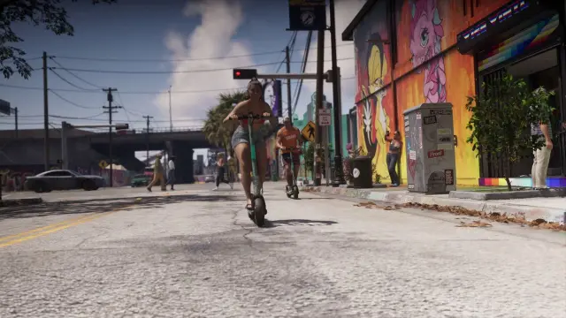

VEHÍCULOS › CONFIRMADOS
ARCHIVO DE VEHÍCULOS · MATERIAL OFICIAL
VEHÍCULOS
CONFIRMADOS
Esta sección solo incluye vehículos que Rockstar Games ha mostrado o nombrado en material oficial. No mezclamos aquí rumores ni filtraciones. Cuando una especificación técnica no ha sido confirmada, la dejamos como tal en vez de inventarla.
VISTO EN MATERIAL OFICIAL
La etiqueta CONFIRMADO significa que existe respaldo oficial de Rockstar Games. No significa que Rockstar haya confirmado cada dato técnico del vehículo.
| IMAGEN | NOMBRE DEL VEHÍCULO | NOMBRE OFICIAL | CATEGORÍA | MOTOR | CILINDRADA | ESTADO | CONFIRMACIÓN |
|---|---|---|---|---|---|---|---|
 | Cheetah del 95 Superdeportivo clásico | ’95 Grotti Cheetah | Superdeportivo | No confirmado | No confirmado | CONFIRMADO | Material oficialUltimate Edition / Rockstar Games |
 | Squalo Lancha | Shitzu Squalo | Marítimo | No confirmado | No confirmado | CONFIRMADO | Material oficialUltimate Edition / Rockstar Games |
 | Dominator Buggy del 67 Buggy todoterreno | ’67 Vapid Dominator Buggy | Todoterreno | No confirmado | No confirmado | CONFIRMADO | Material oficialUltimate Edition / Rockstar Games |
 | Stanier del 55 Sedán clásico | ’55 Vapid Stanier | Sedán clásico | No confirmado | No confirmado | CONFIRMADO | Material oficialVintage Vice City Pack / Rockstar Games |
 | Enduro Motocicleta todoterreno | Dinka Enduro | Motocicleta | No confirmado | No confirmado | CONFIRMADO | Material oficialUltimate Edition / Rockstar Games |
 | Patinete eléctrico Micromovilidad | No confirmado | Micromovilidad | Eléctrico | No aplicable | CONFIRMADO | Visto en material oficialPatinete utilizado por un NPC |
NOTA: Rockstar Games no ha confirmado todas las especificaciones técnicas de los vehículos. Los datos no confirmados se indican como estimaciones basadas en sus posibles modelos reales. En esta página preferimos mostrar “No confirmado” antes que presentar una estimación como un dato oficial.
Fuente de confirmación: material oficial publicado por Rockstar Games en la web de Grand Theft Auto VI. Las imágenes utilizadas en esta sección proceden del material oficial de Rockstar. Esta web es independiente y no está afiliada a Rockstar Games.